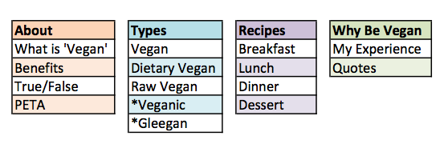

For my final project website, I want to make a site about vegan lifestyle. I have been a vegan for just over a year now and most people that I come across do not fully understand what being 'vegan' is. My goal is to create a user friendly, informational site about what it means to be vegan and why people choose to be vegan, as well as including some recipes for people to make if they are interested. For websites, I usually prefer a minimalist design but I also want to make sure that my website is eye catching, creative, and has quality information and personal pictures.
So far for the content of my page, I was able to come up with some information, recipes, etc. that I want to include in my website. I sorted them in the table below:
3 other sorts to be uploaded soon!
Coming up with content for my final website was fairly easy, however sorting them was a little more difficult than I expected! At first I had many categories; most containing little to no content, so I then looked at the cards and found a way to group some of them together so that it was more organized. The 'Recipes' section was easy to sort considering it is a pretty straightforward section, as well as the 'Types' category. The 'About' section is where I have a lot of the informative content, meant to help educate users. The 'Why Go Vegan' section goes a little further into the lifestyle and is for people who are curious about learning more.